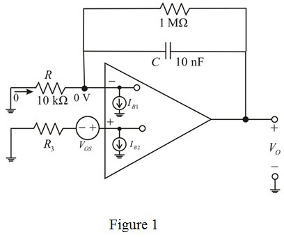
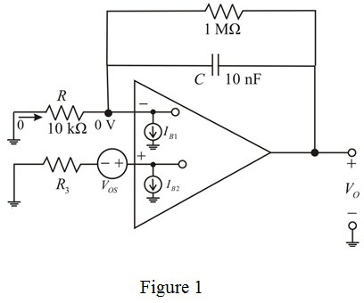

(a)
To compensate for the effect of dc bias current, a resistor  is connected in series with the positive terminal of the op-amp as shown in Figure 1.
is connected in series with the positive terminal of the op-amp as shown in Figure 1.

(a)
To compensate for the effect of dc bias current, a resistor is connected in series with the positive terminal of the op-amp as shown in Figure 1.

Calculate the value of resistor,  .
.
Substitute  for
for  and
and  for
for  .
.
Therefore, the value of resistor,  is .
is .
(b)
Calculate the worst-case dc output voltage after connecting .
.
Substitute for  ,
,  for
for  , for
, for  and
and  for
for  .
.
Therefore, the worst-case dc output voltage,  is .
is .